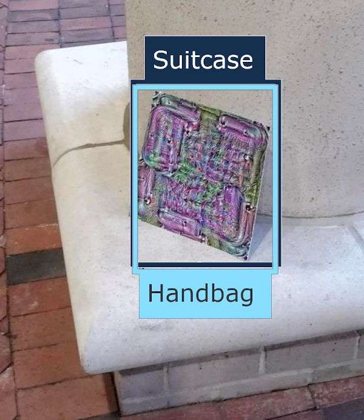

Team
Two Six Technologies, IBM, MITRE, University of Chicago, and Google Research are collaboratively generating platforms, libraries, datasets, and training materials as performers on the DARPA GARD program to holistically evaluate the robustness of AI models and defenses to adversarial attacks.
GARD
Guaranteeing AI Robustness to Deception
The DARPA GARD program seeks to establish theoretical ML system foundations to identify system vulnerabilities, characterize properties that will enhance system robustness, and encourage the creation of effective defenses. Currently, ML defenses tend to be highly specific and are effective only against particular attacks. GARD seeks to develop defenses capable of defending against broad categories of attacks. Furthermore, current evaluation paradigms of AI robustness often focus on simplistic measures that may not be relevant to security. To verify relevance to security and wide applicability, defenses generated under GARD will be measured in a novel testbed employing scenario-based evaluations.
Armory

Armory is a platform for running repeatable, scalable, robust evaluations of adversarial defenses in relevant scenarios. Configuration files are used to launch local or cloud instances of the Armory docker containers. Models, datasets, scenarios, and evaluation scripts can be pulled from external repositories or from the baselines within this project. Armory strongly leverages ART library components for attacks and model integration as well as MITRE-generated datasets and scenarios. Further, the Google Research developed self-study materials contain integration hooks for Armory.
ART

Adversarial Robustness Toolbox (ART) is a Python library for Machine Learning Security. ART provides tools that enable developers and researchers to defend and evaluate Machine Learning models and applications against the adversarial threats of Evasion, Poisoning, Extraction, and Inference. ART supports all popular machine learning frameworks (TensorFlow, Keras, PyTorch, MXNet, scikit-learn, XGBoost, LightGBM, CatBoost, GPy, etc.), all data types (images, tables, audio, video, etc.) and machine learning tasks (classification, object detection, speech recognition, generation, certification, etc.).
APRICOT

APRICOT (Adversarial Patches Rearranged In COnText) is a publicly released benchmark dataset created to enable reproducible research on the real-world effectiveness of physical adversarial patch attacks on object detection systems. This is an example of the types of datasets and scenarios that MITRE is developing to robusly test relevant models and defenses.
Self-Study
Pedagogical Materials for Learning to Evaluate Adversarial Robustness
Google Research Self-Study repository contains a collection of defenses aimed at researchers who wish to learn how to properly evaluate the robustness of adversarial example defenses. While there is a vast literature of published techniques that help to attack adversarial example defenses, few researchers have practical experience actually running these. This project is designed to give researchers that experience, so that when they develop their own defenses, they can perform a thorough evaluation.
class LinfAttack(common.framework.Attack):
def attack(self, model, x, y):
# TODO: Write your attack code here
# You can query model by calling `model(x)`
import numpy as np
return x + np.sign(np.random.normal(size=x.shape))*self.task.threshold
# Can you do better than adding random noise?